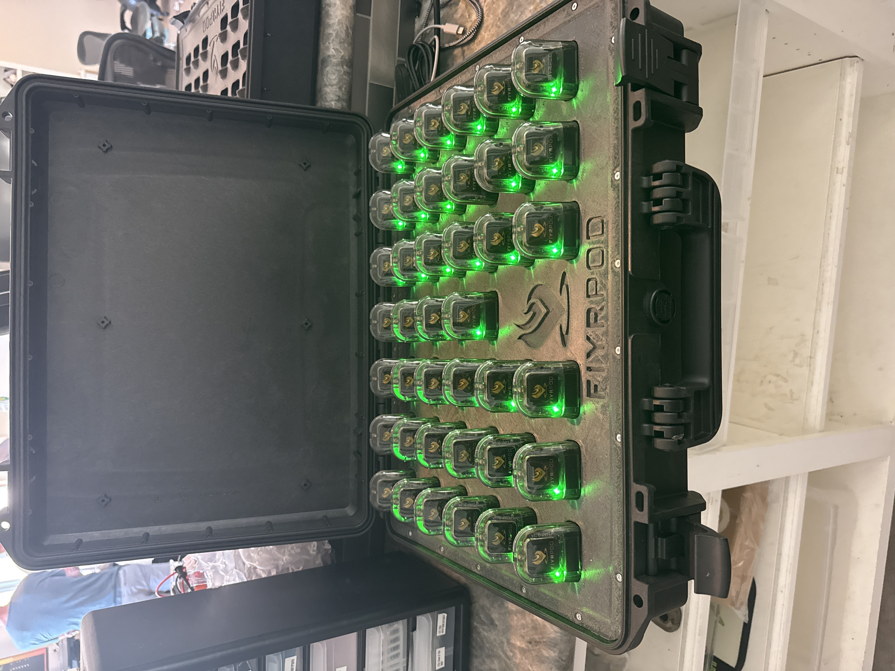

+ Resin
SURVIVE THE FIELD
Athlete wearables sound simple until you account for what they actually go through — sweat, impact, flexion, temperature swings, and repeated handling by people who aren't being careful with them. The hardware has to work perfectly the first time and every time after that.
My job was to take sensor and electronics hardware and design enclosures and mounting systems that could survive that environment while staying manufacturable, serviceable, and production-scalable.
- Designed and iterated enclosures across 10–20 hardware revisions per program
- Balanced DFM, DFA, and field durability simultaneously
- Integrated thermal and vibration considerations into packaging decisions
- Executed validation testing and drove design changes based on failure analysis
- Achieved ~30% improvement in durability over initial designs


- SolidWorks — full parametric CAD modeling and assemblies
- FEA — structural analysis for impact and vibration loads
- Thermal Analysis — heat dissipation and packaging design
- GD&T — toleranced drawings for manufacturing
- DFM / DFA — design for manufacturability and assembly from day one
- Bambu Lab — high-speed FDM, multi-material functional prototypes
- Formlabs — resin SLA for precision and fine-feature parts
- Mingda — large-format FDM for structural components
- Materials — PLA, PETG, ABS, ASA, TPU, engineering nylons, resins
- Post-processing — sanding, priming, heat treatment, hardware inserts
- Drop and impact testing across multiple surfaces and angles
- Vibration and fatigue cycling
- Thermal soak and cycle testing
- Moisture ingress evaluation
- Root cause failure analysis on every failed unit
- Field serviceability — accessible, replaceable components
- Minimal profile — worn hardware must not impede performance
- Production scalability — designed for volume from prototype day one
- Sensor accuracy preservation — packaging cannot degrade signal quality
- Repeatable assembly — consistent build quality across units
CHARGING SYSTEMS



Running parallel to the wearable program, I designed multi-unit charging infrastructure that supports fleet-scale deployment of the sensor hardware.
Key design focus was thermal performance under sustained charging load — multiple units drawing power simultaneously generates real heat that has to go somewhere. Thermal analysis drove the housing geometry and material choices.
Designed for production from the first iteration — clean geometry, minimal assembly steps, and standardized fasteners throughout.